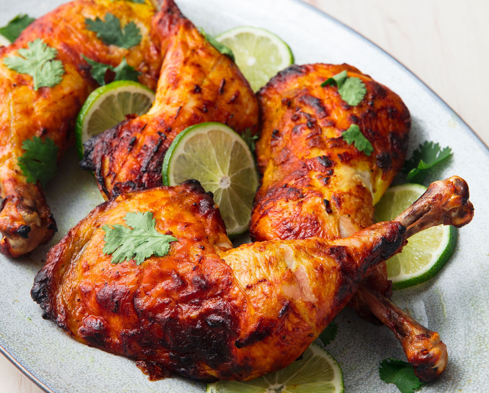

Food
Murg Makhani
Murg Makhani(butter chicken) is one of the top orders at any Indian restaurant in the West. This sultry poultry dish tastes great with kaali daal, naan and a green salad.

Murg Makhani(butter chicken) is one of the top orders at any Indian restaurant in the West. This sultry poultry dish tastes great with kaali daal, naan and a green salad.
Tandoori Chicken is a famous Indian BBQ chicken. Although traditionally cooked in a clay oven, you can produce the yogurt-marinated chicken on a grill or in the oven.
Chicken Tikka Masala is a delicious grilled chicken with a thick creamy gravy. A tomato-yogurt sauce is spiced with chilly, garlic, ginger and guram malala. The chicken is marinated overnight grilled and then gently cooked in a slightly smoky gravy.
Rogan Josh's colour comes from Kashmiri dry red chilies. While the name might sound fiery, the heat of the dish is toned down by the cream that is added at the end.